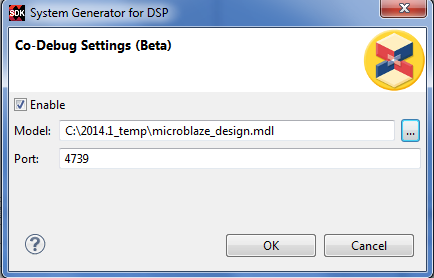

In the System Generator Co-Debug Settings dialog box, you can set parameters required to perform a co-run and co-debug session with a System Generator model. To open this dialog, select Xilinx Tools > System Generator Co-Debug Settings. If the SDK session is invoked from System Generator, this dialog is automatically configured with the required values.

The System Generator Co-Debug Settings dialog has the following options:
Name |
Function |
|---|---|
Enable |
Check this option to enable co-debugging with System Generator. You must have the System Generator tool installed, a supported hardware platform available, and a hardware platform specification file generated by the System Generator hardware co-simulation flow. |
Model |
Specify the name of the System Generator model to associate with the SDK project. |
Port |
Specify the socket port number used to communicate with the System Generator tool; the default port number is 4739. You can find the port number by typing xlSDKCodebugManager('getPortNum') in an active System Generator session. |
The System Generator tool can be used to develop a DSP hardware subsystem that can be connected to a MicroBlaze™ processor subsystem via standard bus interfaces. The processor subsystem can control and provide data to the DSP hardware subsystem using drivers provided by System Generator.
System Generator enables rapid simulation of systems through hardware co-simulation, reducing overall development time. The processor subsystem runs on FPGA hardware, while the subsystem under development is simulated in the System Generator modeling environment. The SDK co-debug feature allows you to run and debug software running on the processor in SDK with complete visibility and control over the hardware peripheral under development in System Generator.
This feature also supports cross-triggering between the processor subsystem and the DSP subsystem. Starting or stopping the processor subsystem also starts and stops the simulation of the DSP subsystem in System Generator (and vice versa). All available SDK features can be used to debug your software application.
The hardware system with the necessary cross-triggering logic and interfaces is created in System Generator using its hardware co-simulation flow. Refer to the "Hardware and Software Co-Design" chapter of the System Generator User Guide for more details and tutorials.